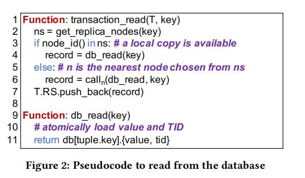
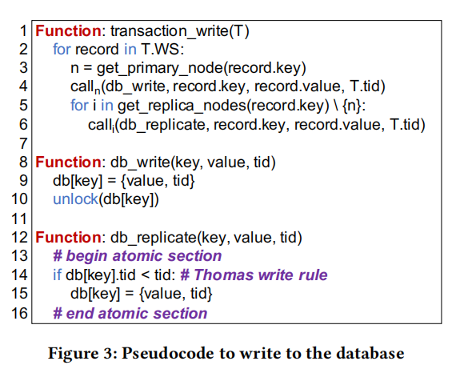
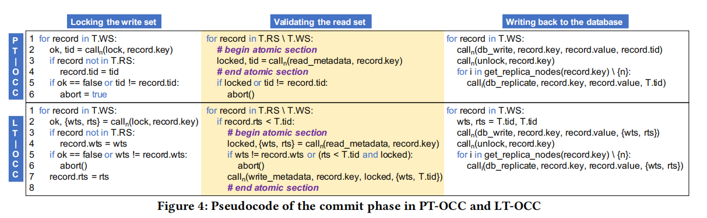

VLDB 2021 CoCo论文阅读
记录一篇之前读过的论文。。。
整篇论文的核心在于Epoch，将传统数据库以事务为粒度提交和恢复变成了以Epoch为粒度来提交和恢复，这样做的好处就是可以减少2PC和同步复制的时间开销。并且提出两种OCC算法，对于Epoch机制来说很有好处。
这篇文章理论介绍性居多，对于事务处理的流程做了很详细的解释，包括2PC的处理，容错的处理，及事务各生命周期的伪代码，如果各位有兴趣可以阅读原文。
主要贡献
1.实现了COCO这个OLTP系统，可以选择复制方式，primary-backup replication和state machine replication，我的理解很简单就是前者是将操作在主节点执行完后的数据复制到备机，后者是复制操作到每个节点，每个节点各自执行这个操作。
2.两个OCC算法
下面我也主要进行介绍事务处理过程吧，最后介绍两个OCC算法
2PC
和传统的2PC没有太多区别，只不过系统是以Epoch为粒度，所以当Epoch内只要有一个事务被Abort那么整个Epoch都会被Abort，这样的处理很明显有很大的缺陷，会导致事务的Abort率增加，所以论文对于并发性访问或者违反完整性约束条件的事务是只Abort这一个事务，而不会Abort该事务所在的Epoch。
Epoch的缺陷
优点很明显，缺陷也很明显，Epoch最大的优势就在于可以减少2PC和同步开销，而最明显的缺陷就是Epoch的机制导致，Commit延迟会比事务为粒度的系统更长，并且如果涉及到长事务，会更加凸显这个问题，影响其他事务的提交。还有上面提到的Abort率会增加，因为一个事务的abort会导致整个Epoch的Abort。
事务生命周期
Coco的事务大体分为两个阶段，执行和提交，首先我们明确一个点，初始化事务的节点为协调节点，接下来再解释两个阶段
执行阶段
在执行阶段，如果是读操作，会首先判断是否已经在读集中，如果在读集就直接读缓存，为了防止多次读同一个数据的问题。如果没有在读集就进入transaction_read，判断当前本地节点是否有需要读的key值对应的Value(第三行)，ns是Node Set，记录存在该key值副本的节点id，如果没有就到最近存在该key的节点去读value(第6行)。

对于写入操作，如果该节点不是主节点就将其插入事务的写集，如果是该key的主节点，因为是OCC，所以就直接写入数据库。
此时结束了执行阶段进入提交阶段
提交阶段
提交阶段分为三步，1.写集上锁，2.OCC验证 3.提交
在上锁阶段，只对主节点上锁，而且为了避免死锁，COCO使用NO_WAIT的策略，也就是如果有另一个事务要写相同数据的时候，看到数据已经被上锁了，不进行等待，直接进行Abort。并且在上锁之前会对TID进行对比，如果写集的TID和数据库的不相等，直接abort，出现这种情况的原因是存在读事务更改TID的可能，也就是写后读。
写集上锁后进行OCC验证，也就是对比TID的过程。只有OCC验证通过才能进行提交，否则就abort。下面就是写入数据库的过程，得到所有key的副本节点(第3行)，然后找一个最近的节点写入该数据(第4行)，再对所有节点进行同步(第5-6行)，因为异步同步的原因，不能保证多个事务写的顺序一致，所以采用了托马斯写规则，写TID更大的那个，直接覆盖前一个(第14-15行)。

OCC算法
PT-OCC
physical time OCC，即使用物理时钟的OCC，使用物理时钟的分布式数据库有一个需要考虑的问题，即时钟偏移，得保证所有的节点的时间节点一致。当然现在的很多时钟NTP组件可以做到ms级别，对于事务来说，也算是勉强够用吧。主要是将Silo的单机OCC改成分布式OCC。主要思路就是验证读集，无需让写集的每个记录持有锁，只要未检测到更改，就可以确保读取一致快照。
锁阶段
将事务写集中所有记录的primary node给锁定上，这个tid是新生成的，如果这条记录在写集中，那么就遵循Thomas写规则，record的tid用最新的tid覆盖。然后ok的判断是判断这个锁有没有被其他的事务占用，如果占用了，他为了避免死锁，采用了no_wait的死锁预防策略，就是一旦有其他的事务占用锁了，那就直接abort就好。后面的TID不同就是可能这条记录被覆盖掉了，所以就abort，写写冲突。

Validate读集阶段
再次确认此时的记录被当前事务lock并且没被其他并发事务修改
写回数据库
没有被abort就先提交到primary key所在的节点，解锁这条记录，然后再异步的把这数据更改到其他节点
LT-OCC
就是逻辑时间OCC，逻辑时间就无需全局时钟，然后COCO是把Tictoc单节点OCC改成分布式OCC。[wts, rts]的含义是，wts代表记录何时写入，rts代表在[wts, rts]区间都可以读。
上锁阶段
大部分和PT-OCC相同。wts是记录写的时间，也相当于之前physical time的TID，rts是可以读取的时间，因为在当前时间有读写集，所以rts需要更新到最新的时间。
验证读集阶段
读集中的rts
写回数据库
和PT-OCC类似
快照事务的实现，文中提到了一点，当没数据冲突的时候，可以读一致性快照。
提到的一个优化点，锁定写集和验证读集并行进行。可以提高吞吐量。